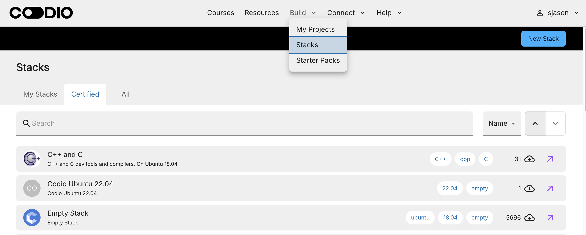
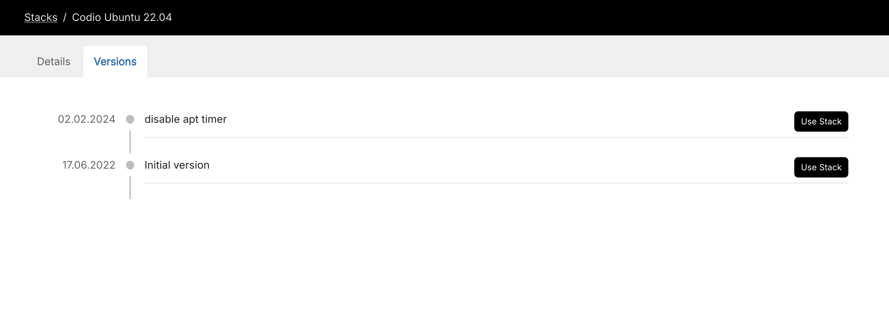

Using Stacks¶
Codio Stacks enable you to create and manage a combination of a Codio box and installed system-level components (languages, databases, web servers etc.) to be used when creating new projects. Use the Stacks page to search for and select a stack.

You can also select a stack when creating a project or switching the stack for a project.
On the Stacks page, you can select a stack from the following lists:
My Stacks - Stacks that were created by you or set to be owned by the organization.
Certified - Stacks that are approved by Codio and cover a wide range of common stack configurations.
All - Searchable repository of all stacks.
Search stacks¶
To search for a stack, enter the appropriate search criteria in the search field; this is typically the name of the main stack component(s). The search will return the stack name, description, and any tags that are used.
If you cannot find a stack that meets your needs, you can create your own stack and add it to your Stack library.
View stack details¶
Click the Stack in the list to view detailed information, including the version, description, components, and how to use the stack.
To view the different versions of the stack, click the Versions tab.
Create project from a stack¶
You can select a stack to use for creating a project using one of the following methods:
On the stack Details page, click Use Stack. If there are multiple versions of the stack, the latest version is used to create the project.
On the stack Versions page, find the version in the list and click Use Stack. You can then create the project using that specific version. Codio recommends using the latest version of a stack.

On the Stacks page, click the arrow (Create project with) icon to the far right of the stack item without opening the details. If there are multiple versions of the stack, the latest version is used to create the project.
The Create Project dialog is then populated with the selected stack configuration.
Note
If you are in an assignment, click the Stack button while in Edit mode and set the stack version.
Exclude files and folders from stack¶
When you create a stack, it is based on the contents of the /home/codio folder but omits your code workspace. If you want to exclude other files or folders, follow these steps:
Create a ~/.codio/stack_exclusions file in the project the stack is based on.
Add the full paths to the file or folder to be excluded from the stack. When in the folder, run readlink -f <filename> to get the full path. Globbing and wildcards are not supported. Include only one path per line.